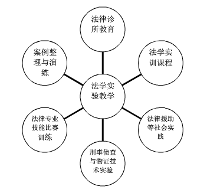

2016年江苏省成人高等教育重点专业（含精品资源共享课）申报网站
2007年省级成教特色专业
 申报材料 >实践教学环节
申报材料 >实践教学环节
实验、实践教学是法学的传统。法学实验教学手段多样如专业实习、案例教学法、模拟法庭实验、法律技术实验等等。各种实践教学环节需要与课堂教学、理论研究和社会生活结合起来才能确保实验教学的效果。在建设实验教学的过程中一个重要思路就是整合各个实验教学环节按照“课堂教学与社会实践相融合、通识教育与职业教育相融合、理论教学与实验教学相融合”的框架改造现有的实践教学手段开拓新的实验教学途径构建一套多形式、多层次、各环节连贯相关的法学实验教学体系。
为更好地实施项目建设计划，法学院专门成立“南京大学法学实践教学中心”，在组织管理、人员配备、资金投入等方面向实践教学倾斜，每年投入大量教学经费组织实施实验教学建设取得了明显的成效。目前已经形成比较成熟的实验教学管理机制一套实验教学体系取得一系列教学成果。
法学实验教学中心开展的实验教学内容如图所示如下：

通过几年的探索与努力，法学实践教学中心建设已经取得显著成果。
（1）探索实践教学手段的多元化及其整合。首先在诉讼法学课程中试点开展实训课程。该试点以程序法实训作为整合手段，实现两个整合：整合课堂教学与社会实践；整合观摩庭审、模拟法庭、诊所教学等实践教学环节。做法是：把全体学生分组，每组20人左右，指定小组召集人。寻找真实的、合适学生演练的民事案件，将卷宗复印发放给每个学生。在一个月左右的时间里，各组召集人负责组织全体成员讨论研究案件，学生历经包括分析证据、查找法条、观摩庭审、推理论证、角色扮演等在内的各种环节，最后进行汇总实演。实演当天，各组通过抽签确定本组角色，派代表参加模拟法庭。另有教师（包括校外指导老师）和法官、律师等专家现场点评。
（2）将课堂教学与课外活动相结合。以学生自发组织的读书会、科研团体、社会调查小组等学生组织为基础，利用学生科研基金，为有研究兴趣的学生提供指导教师和经费支持，鼓励本科学生与研究生合作研究。这一改革方案的意义是多重的：一方面通过指导教师（包括校外指导老师）这一桥梁，将课堂教学与课外活动有机结合起来；另一方面还可以充分利用研究生资源，带动学生研究性学习；此外还有助于提高学生自组织程度，扩大学生的社会交往圈子，开扩眼界和思路。近年来，部分教研室进行研究型教学方式改革探索，如宪法与行政法教研室指导学生读书会活动、民法学教研室的案例演练课程、国际法教研室的教学模式优化与模拟法庭比赛训练等，初步取得成效。
（3）继续开设并不断完善诊所课程。诊所式的教学模式提倡互动式教学方法，强调学生的主动学习能力，要求每个学生都积极参与，引导学生找出每个案件背后的基本原则，然后把思想清晰的表达出来。这种方式以学生为主体，教师作为引导者而非权威的标准答案认定者。教师在课堂上传授知识的功能只是其次，重要的是充当推动者、协作者和启发者，鼓励和引导学生发挥判断力、创造力和深入思考能力。目前，诊所课程已经顺利完成两届教学任务，发现了一些问题，也积累了一些经验。该课程将进一步扩展授课对象，丰富和完善教学内容，依托南京大学法律援助中心，拓展学生实践机会，不断提高教学质量，并逐步将诊所教学的思路与手段影响其他课程，带动法学本科教学方式的整体改革。在未来三年内，法学院将逐步建立和完善诊所法律课程的基本建设。具体包括：组建一支高水平的稳定的诊所教师队伍（包括校内、校外指导老师）；编撰一套专用教材，完善教学大纲；撰写一系列教学研究论文；与法院、律师协会、公证处、消费者权益保护协会、妇联、工会、共青团、报社、电视台等机关和社会团体开展合作，建立校外实践教学基地；完成诊所教学必需的场所和硬件建设。